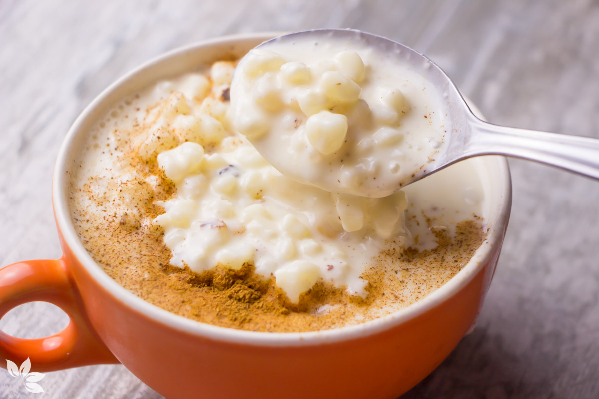
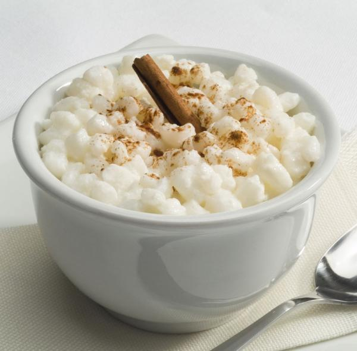

Como Fazer?

Ingredientes
- 500g de canjica branca
- 1 litro de leite
- 1 lata de leite condensado
- 1/2 xícara de açúcar
- 1 colher de sopa de canela em pó
- 1/2 colher de sopa de cravo-da-índia em pó
- 1/4 de xícara de coco ralado
Leia mais

Modo de Preparo
- Lave a canjica em água corrente e deixe de molho por 4 horas.
- Escorra a canjica e coloque em uma panela grande.
- Adicione o leite, o leite condensado, o açúcar, a canela, o cravo-da-índia e o coco ralado.
- Leve ao fogo médio e cozinhe, mexendo sempre, por cerca de 40 minutos, ou até que a canjica esteja macia e o caldo tenha engrossado.
- Retire do fogo e sirva quente ou fria.
Leia mais
Todos os direitos reservados